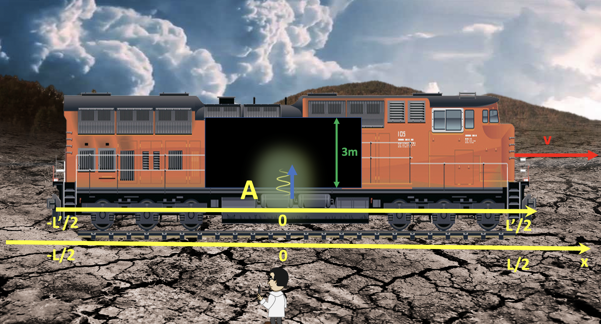

Forrige side🙂 🙁Eksempel 1PADLET

Merk at event A her også kan kalles origoeventet. Origoeventet er et event som skjer i origo på begge aksene. Dvs. det skjer når origo i de to aksene er på samme x-koordinat slik at en observatør som er i origo i begge systemer kan treffes fysisk. Origoeventet skjer på x = x′ = 0. Normalt (slik som her) så bruker vi også origoeventet til å starte klokkene slik at ogsa t = t′ = 0 i dette eventet. Vi ser for oss at vi har en stoppeklokke som står i origo i hvert av systemene. I det origo i begge systemer berører hverandre, nullstilles begge klokkene og de begynner å gå.